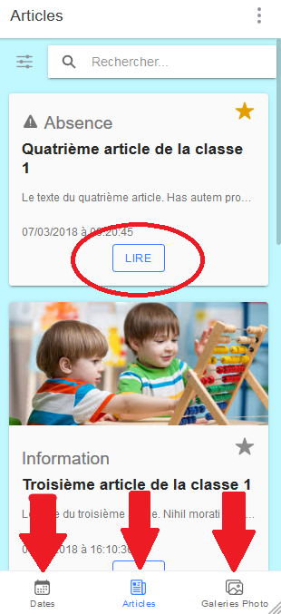
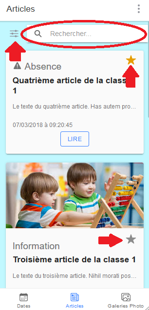
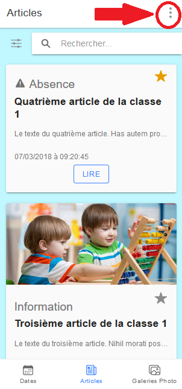

<ion-content>
  <ion-slides pager="true">
    <ion-slide>
      <div>
        <h1>Navigation entre les menus de l'application et lecture d'un article </h1>
        
        <p>(swipez pour continuer...)</p>
      </div>
      <ion-icon name="arrow-forward" size="large"></ion-icon>
    </ion-slide>
    <ion-slide>
      <div>
        <h4>Barre de recherche pour chercher dans les articles (avec paramètre pour affichage des articles favoris) </h4>
        <h4> Possiblité de mettre un article en favori en cliquant sur l'étoile </h4>
        
      </div>
      <ion-icon name="arrow-forward" size="large"></ion-icon>
    </ion-slide>
    <ion-slide>
      <div>
        <h4> Menu pour accéder aux sections : à propos, déconnexion et pour revoir ce tutoriel</h4>
        
        <ion-button (click)="confirm($event)">J'ai compris</ion-button>
      </div>
    </ion-slide>
  </ion-slides>
</ion-content>
